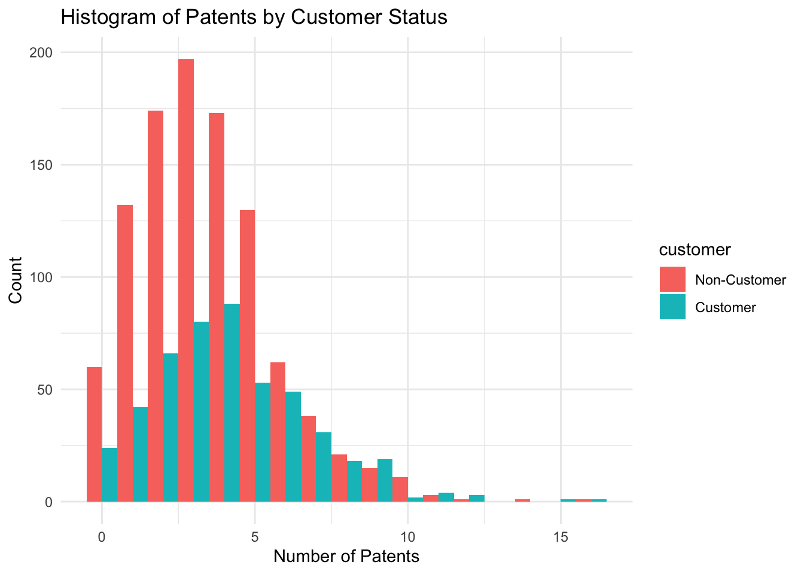
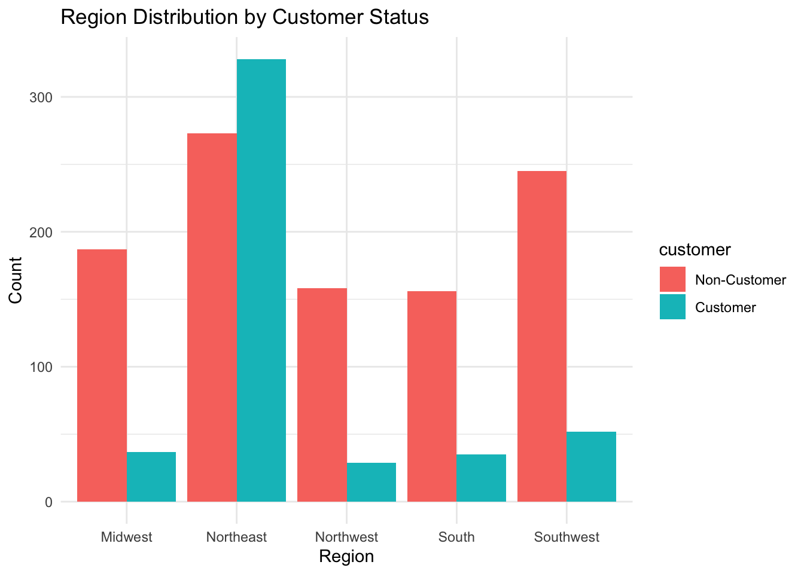
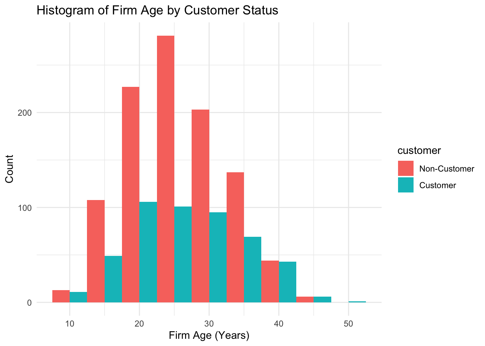
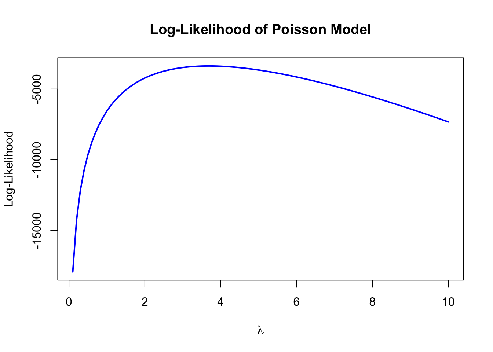
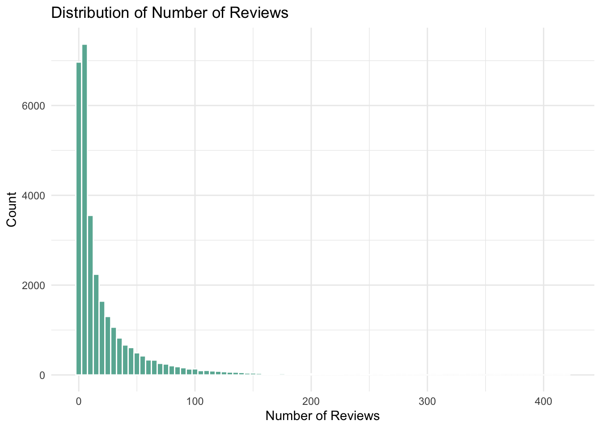
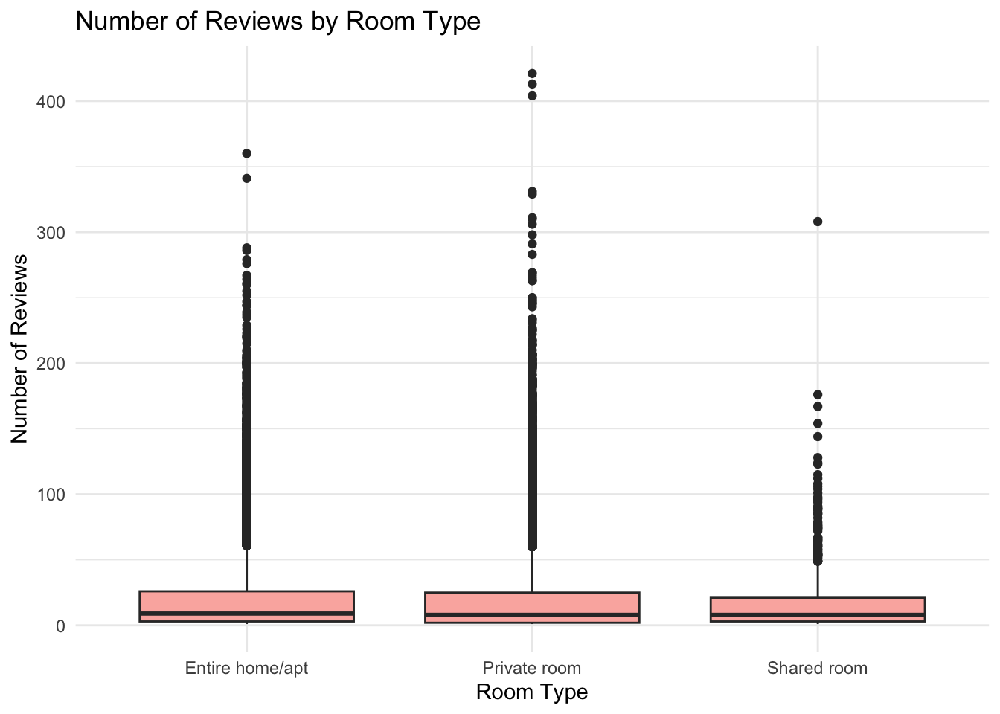
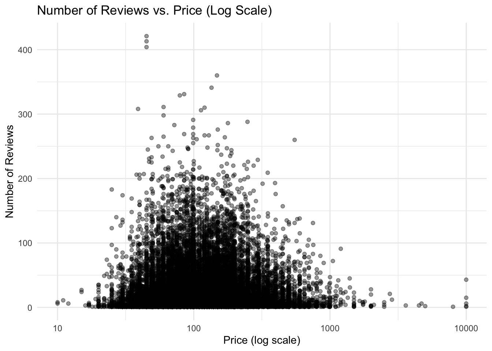
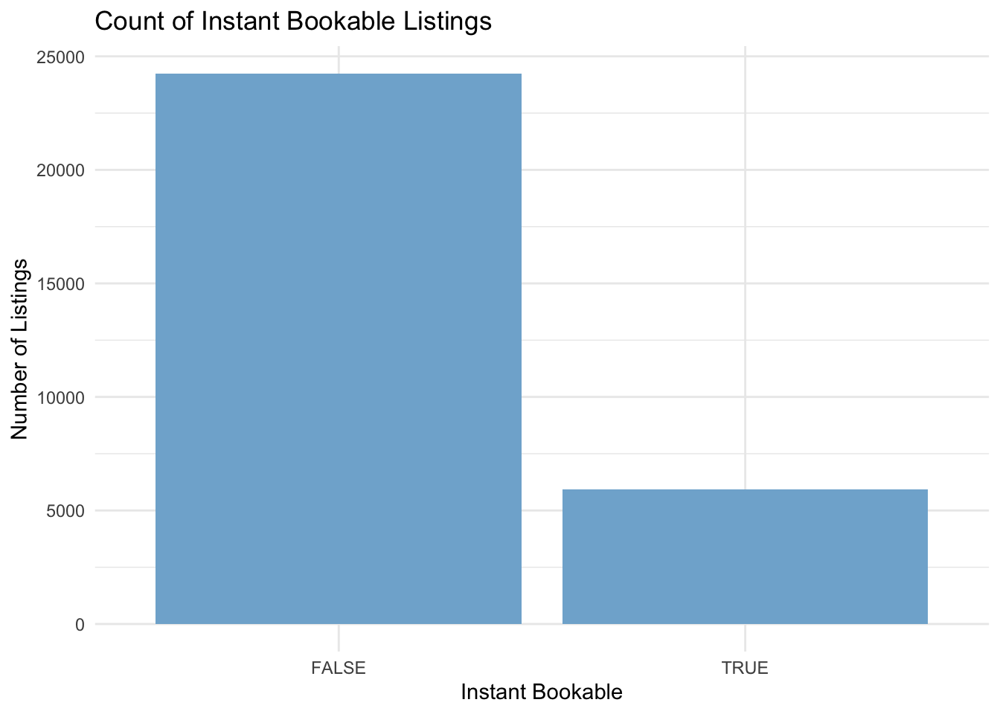

Blueprinty is a small firm that makes software for developing blueprints specifically for submitting patent applications to the US patent office. Their marketing team would like to make the claim that patent applicants using Blueprinty’s software are more successful in getting their patent applications approved. Ideal data to study such an effect might include the success rate of patent applications before using Blueprinty’s software and after using it. Unfortunately, such data is not available.
However, Blueprinty has collected data on 1,500 mature (non-startup) engineering firms. The data include each firm’s number of patents awarded over the last 5 years, regional location, age since incorporation, and whether or not the firm uses Blueprinty’s software. The marketing team would like to use this data to make the claim that firms using Blueprinty’s software are more successful in getting their patent applications approved.
Data
# Load necessary librarylibrary(tidyverse)
── Attaching core tidyverse packages ──────────────────────── tidyverse 2.0.0 ──
✔ dplyr 1.1.4 ✔ readr 2.1.5
✔ forcats 1.0.0 ✔ stringr 1.5.1
✔ ggplot2 3.5.2 ✔ tibble 3.2.1
✔ lubridate 1.9.4 ✔ tidyr 1.3.1
✔ purrr 1.0.4
── Conflicts ────────────────────────────────────────── tidyverse_conflicts() ──
✖ dplyr::filter() masks stats::filter()
✖ dplyr::lag() masks stats::lag()
ℹ Use the conflicted package (<http://conflicted.r-lib.org/>) to force all conflicts to become errors
# Read the Blueprinty datasetblueprinty <-read_csv("/Users/siddharthbam/Desktop/marketing Analytics/sid_site/blog/project4/blueprinty.csv")
Rows: 1500 Columns: 4
── Column specification ────────────────────────────────────────────────────────
Delimiter: ","
chr (1): region
dbl (3): patents, age, iscustomer
ℹ Use `spec()` to retrieve the full column specification for this data.
ℹ Specify the column types or set `show_col_types = FALSE` to quiet this message.
# View the first few rows of the datasethead(blueprinty)
# Convert iscustomer to a labeled factorblueprinty <- blueprinty %>%mutate(customer =factor(iscustomer, labels =c("Non-Customer", "Customer")))# Plot histogram of number of patents by customer statusggplot(blueprinty, aes(x = patents, fill = customer)) +geom_histogram(binwidth =1, position ="dodge") +labs(title ="Histogram of Patents by Customer Status", x ="Number of Patents", y ="Count") +theme_minimal()

library(knitr)# Calculate and display mean number of patents by customer status as a tableblueprinty %>%group_by(customer) %>%summarize(mean_patents =mean(patents), .groups ="drop") %>%kable(digits =2, caption ="Mean Number of Patents by Customer Status")
Mean Number of Patents by Customer Status
customer
mean_patents
Non-Customer
3.47
Customer
4.13
Blueprinty customers are not selected at random. It may be important to account for systematic differences in the age and regional location of customers vs non-customers.
# Compare region distribution by customer statusggplot(blueprinty, aes(x = region, fill = customer)) +geom_bar(position ="dodge") +labs(title ="Region Distribution by Customer Status", x ="Region", y ="Count") +theme_minimal()

# Compare age distribution by customer statusggplot(blueprinty, aes(x = age, fill = customer)) +geom_histogram(binwidth =5, position ="dodge") +labs(title ="Histogram of Firm Age by Customer Status", x ="Firm Age (Years)", y ="Count") +theme_minimal()

library(knitr)# Compare mean age by customer status and display as a tableblueprinty %>%group_by(customer) %>%summarize(mean_age =mean(age), .groups ="drop") %>%kable(digits =1, caption ="Mean Firm Age by Customer Status")
Mean Firm Age by Customer Status
customer
mean_age
Non-Customer
26.1
Customer
26.9
Estimation of Simple Poisson Model
Since our outcome variable of interest can only be small integer values per a set unit of time, we can use a Poisson density to model the number of patents awarded to each engineering firm over the last 5 years. We start by estimating a simple Poisson model via Maximum Likelihood.
Let \(Y_1, Y_2, \dots, Y_n\) be independent observations such that \(Y_i \sim \text{Poisson}(\lambda)\).
Then the likelihood function is: \[
L(\lambda) = \prod_{i=1}^{n} \frac{e^{-\lambda} \lambda^{Y_i}}{Y_i!}
\] Taking the natural logarithm, the log-likelihood becomes:
# Define the Poisson log-likelihood functionpoisson_loglikelihood <-function(lambda, Y) {if (lambda <=0) {return(-Inf) # log-likelihood is undefined for non-positive lambda }sum(Y *log(lambda) - lambda -lgamma(Y +1))}
# Create a sequence of lambda values to evaluatelambda_vals <-seq(0.1, 10, by =0.1)# Compute log-likelihood for each lambdaloglik_vals <-sapply(lambda_vals, poisson_loglikelihood, Y = blueprinty$patents)# Plot lambda vs log-likelihoodplot(lambda_vals, loglik_vals, type ="l",main ="Log-Likelihood of Poisson Model",xlab =expression(lambda), ylab ="Log-Likelihood",col ="blue", lwd =2)

Let \(Y_1, Y_2, \dots, Y_n \overset{iid}{\sim} \text{Poisson}(\lambda)\), and recall that the log-likelihood function is:
This result is intuitive because, in a Poisson distribution, the mean is \(\lambda\), making the sample mean \(\bar{Y}\) a natural and logical estimator for \(\lambda\).
# Use optim to maximize the Poisson log-likelihood functionmle_result <-optim(par =1, # initial guess for lambdafn =function(lambda) -poisson_loglikelihood(lambda, blueprinty$patents), # we minimize negative log-likelihoodmethod ="Brent", # since lambda is one-dimensionallower =0.01, # lambda must be positiveupper =20# reasonable upper bound)# Print the MLE resultmle_result$par # This is the estimated lambda (MLE)
[1] 3.684667
Estimation of Poisson Regression Model
Next, we extend our simple Poisson model to a Poisson Regression Model such that \(Y_i = \text{Poisson}(\lambda_i)\) where \(\lambda_i = \exp(X_i'\beta)\). The interpretation is that the success rate of patent awards is not constant across all firms (\(\lambda\)) but rather is a function of firm characteristics \(X_i\). Specifically, we will use the covariates age, age squared, region, and whether the firm is a customer of Blueprinty.
# Define the log-likelihood for Poisson regressionpoisson_regression_likelihood <-function(beta, Y, X) { eta <- X %*% beta # linear predictor: Xβ lambda <-exp(eta) # inverse link: λ = exp(Xβ) loglik <-sum(Y *log(lambda) - lambda -lgamma(Y +1))return(loglik)}
# Ensure necessary library is loadedlibrary(tidyverse)# Prepare covariatesblueprinty <- blueprinty %>%mutate(age_sq = age^2,region =factor(region),iscustomer =as.numeric(iscustomer),customer =as.numeric(iscustomer) # preserve naming from earlier )# Create design matrix XX <-model.matrix(~ age + age_sq + region + customer, data = blueprinty)# Response variableY <- blueprinty$patents# Define the Poisson regression log-likelihood (to maximize)poisson_regression_likelihood <-function(beta, Y, X) { eta <- X %*% beta lambda <-exp(eta)sum(Y *log(lambda) - lambda -lgamma(Y +1))}# Negative log-likelihood for minimizationneg_loglik <-function(beta) {-poisson_regression_likelihood(beta, Y, X)}# Initial values for betainit_beta <-rep(0, ncol(X))# Optimizationfit <-optim(par = init_beta,fn = neg_loglik,hessian =TRUE,method ="BFGS")# Extract estimates and compute standard errorsbeta_hat <- fit$parhessian <- fit$hessianvar_beta <-solve(hessian) # Inverse Hessian = variance-covariance matrixse_beta <-sqrt(diag(var_beta)) # Standard errors# Create summary tableresults <-tibble(Term =colnames(X),Estimate = beta_hat,Std_Error = se_beta)results
# Fit Poisson regression model using glmglm_fit <-glm(patents ~ age +I(age^2) + region + customer, data = blueprinty, family =poisson(link ="log"))# Summary of the modelsummary(glm_fit)
Call:
glm(formula = patents ~ age + I(age^2) + region + customer, family = poisson(link = "log"),
data = blueprinty)
Coefficients:
Estimate Std. Error z value Pr(>|z|)
(Intercept) -0.508920 0.183179 -2.778 0.00546 **
age 0.148619 0.013869 10.716 < 2e-16 ***
I(age^2) -0.002971 0.000258 -11.513 < 2e-16 ***
regionNortheast 0.029170 0.043625 0.669 0.50372
regionNorthwest -0.017574 0.053781 -0.327 0.74383
regionSouth 0.056561 0.052662 1.074 0.28281
regionSouthwest 0.050576 0.047198 1.072 0.28391
customer 0.207591 0.030895 6.719 1.83e-11 ***
---
Signif. codes: 0 '***' 0.001 '**' 0.01 '*' 0.05 '.' 0.1 ' ' 1
(Dispersion parameter for poisson family taken to be 1)
Null deviance: 2362.5 on 1499 degrees of freedom
Residual deviance: 2143.3 on 1492 degrees of freedom
AIC: 6532.1
Number of Fisher Scoring iterations: 5
The Poisson regression shows that Blueprinty customers file more patents than non-customers, even after controlling for firm age and region. The customer coefficient is positive and statistically significant, indicating that using Blueprinty’s software is associated with a higher expected number of patents. Age has a nonlinear effect, suggesting patenting increases with firm age up to a point and then declines. Regional differences also affect patent counts relative to the baseline region.
# Use fitted coefficients from glmbeta_hat <-coef(glm_fit)# Create X_0: all firms set as non-customersblueprinty_X0 <- blueprinty %>%mutate(customer =0)X_0 <-model.matrix(~ age +I(age^2) + region + customer, data = blueprinty_X0)# Create X_1: all firms set as customersblueprinty_X1 <- blueprinty %>%mutate(customer =1)X_1 <-model.matrix(~ age +I(age^2) + region + customer, data = blueprinty_X1)# Predict patent counts under each scenarioy_pred_0 <-exp(X_0 %*% beta_hat)y_pred_1 <-exp(X_1 %*% beta_hat)# Compute average differencetreatment_effect <-mean(y_pred_1 - y_pred_0)treatment_effect
[1] 0.7927681
The average treatment effect estimated from the Poisson regression model is approximately 0.79. This means that, holding age and region constant, firms that use Blueprinty’s software are predicted to receive about 0.79 more patents over 5 years compared to firms that do not use the software.
AirBnB Case Study
Introduction
AirBnB is a popular platform for booking short-term rentals. In March 2017, students Annika Awad, Evan Lebo, and Anna Linden scraped of 40,000 Airbnb listings from New York City. The data include the following variables:
Variable Definitions
- `id` = unique ID number for each unit
- `last_scraped` = date when information scraped
- `host_since` = date when host first listed the unit on Airbnb
- `days` = `last_scraped` - `host_since` = number of days the unit has been listed
- `room_type` = Entire home/apt., Private room, or Shared room
- `bathrooms` = number of bathrooms
- `bedrooms` = number of bedrooms
- `price` = price per night (dollars)
- `number_of_reviews` = number of reviews for the unit on Airbnb
- `review_scores_cleanliness` = a cleanliness score from reviews (1-10)
- `review_scores_location` = a "quality of location" score from reviews (1-10)
- `review_scores_value` = a "quality of value" score from reviews (1-10)
- `instant_bookable` = "t" if instantly bookable, "f" if not
# Load required librarieslibrary(tidyverse)# Read in the Airbnb dataairbnb <-read_csv("airbnb.csv")
New names:
Rows: 40628 Columns: 14
── Column specification
──────────────────────────────────────────────────────── Delimiter: "," chr
(3): last_scraped, host_since, room_type dbl (10): ...1, id, days, bathrooms,
bedrooms, price, number_of_reviews, rev... lgl (1): instant_bookable
ℹ Use `spec()` to retrieve the full column specification for this data. ℹ
Specify the column types or set `show_col_types = FALSE` to quiet this message.
• `` -> `...1`
# Histogram of Number of Reviewsggplot(airbnb_clean, aes(x = number_of_reviews)) +geom_histogram(binwidth =5, fill ="#69b3a2", color ="white") +labs(title ="Distribution of Number of Reviews",x ="Number of Reviews",y ="Count" ) +theme_minimal()

# Boxplot: Reviews by Room Typeggplot(airbnb_clean, aes(x = room_type, y = number_of_reviews)) +geom_boxplot(fill ="#fbb4ae") +labs(title ="Number of Reviews by Room Type",x ="Room Type",y ="Number of Reviews" ) +theme_minimal()

# Scatter Plot: Price vs. Number of Reviews (log scale for price)ggplot(airbnb_clean, aes(x = price, y = number_of_reviews)) +geom_point(alpha =0.4) +scale_x_log10() +labs(title ="Number of Reviews vs. Price (Log Scale)",x ="Price (log scale)",y ="Number of Reviews" ) +theme_minimal()

# Bar Plot: Count of Instant Bookable Listingsggplot(airbnb_clean, aes(x = instant_bookable)) +geom_bar(fill ="#80b1d3") +labs(title ="Count of Instant Bookable Listings",x ="Instant Bookable",y ="Number of Listings" ) +theme_minimal()

# Drop any factor variable with only one levelfactor_vars <-sapply(airbnb_clean, is.factor)valid_factors <-names(which(sapply(airbnb_clean[, factor_vars], nlevels) >1))airbnb_clean <- airbnb_clean %>%select(all_of(c("number_of_reviews", valid_factors, "bathrooms", "bedrooms", "price", "review_scores_cleanliness", "review_scores_location", "review_scores_value")))# Build model formula dynamicallypredictors <-setdiff(names(airbnb_clean), "number_of_reviews")formula_text <-paste("number_of_reviews ~", paste(predictors, collapse =" + "))model_formula <-as.formula(formula_text)# Fit the Poisson regression modelairbnb_model <-glm(model_formula, data = airbnb_clean, family =poisson(link ="log"))# Display model summarysummary(airbnb_model)
Call:
glm(formula = model_formula, family = poisson(link = "log"),
data = airbnb_clean)
Coefficients:
Estimate Std. Error z value Pr(>|z|)
(Intercept) 3.572e+00 1.600e-02 223.215 < 2e-16 ***
room_typePrivate room -1.453e-02 2.737e-03 -5.310 1.09e-07 ***
room_typeShared room -2.519e-01 8.618e-03 -29.229 < 2e-16 ***
instant_bookableTRUE 3.344e-01 2.889e-03 115.748 < 2e-16 ***
bathrooms -1.240e-01 3.747e-03 -33.091 < 2e-16 ***
bedrooms 7.494e-02 1.988e-03 37.698 < 2e-16 ***
price -1.436e-05 8.303e-06 -1.729 0.0838 .
review_scores_cleanliness 1.132e-01 1.493e-03 75.821 < 2e-16 ***
review_scores_location -7.680e-02 1.607e-03 -47.796 < 2e-16 ***
review_scores_value -9.153e-02 1.798e-03 -50.902 < 2e-16 ***
---
Signif. codes: 0 '***' 0.001 '**' 0.01 '*' 0.05 '.' 0.1 ' ' 1
(Dispersion parameter for poisson family taken to be 1)
Null deviance: 961626 on 30159 degrees of freedom
Residual deviance: 936528 on 30150 degrees of freedom
AIC: 1058014
Number of Fisher Scoring iterations: 6